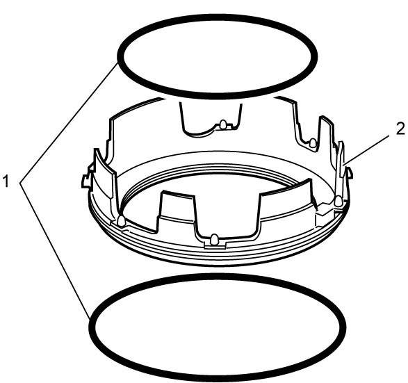
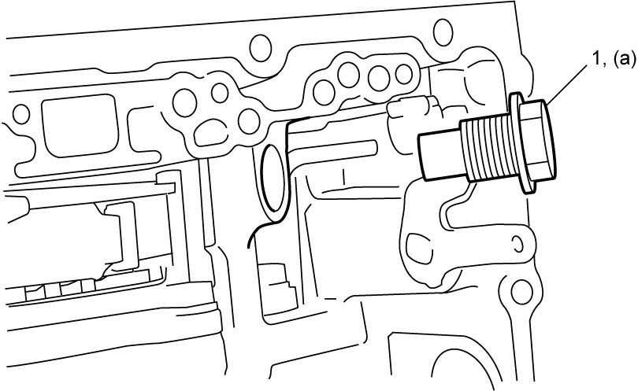

5A
| A/T Assembly Reassembly |
Before performing the following procedure, observe Precautions for Disassembly and Reassembly.
1)Install new manual shift shaft oil seal to transaxle case evenly at specified position as shown in figure.
Use special tool and hammer it to install oil seal, and then apply grease to its lip portion.

Use special tool and hammer it to install oil seal, and then apply grease to its lip portion.
Manual shift shaft oil seal installing depth
“a”: –0.3 to +0.4 mm (–0.011 to +0.015 in.)
 "Expand image")
2)Install 1st and reverse brake to transaxle case as follows.
a)After applying ATF to new O-rings (1), install them to 1st and reverse brake piston (2).

 "Expand image")
b)Install 1st and reverse brake piston (1) to transaxle case (2).
NOTE:
Be careful not to damage O-ring when installing 1st and reverse brake piston.
 "Expand image")
c)After applying ATF to 1st and reverse brake return spring (1), install it to transaxle case (2).
 "Expand image")
d)Compress 1st and reverse brake return spring using flat-bladed screwdriver, and then install new snap ring as follows.
i)Fit snap ring ends into groove as shown in figure.
 "Expand image")
ii)Fit snap ring into groove gradually and evenly starting from both right and left ends.
3)Tighten seal ring to 5 mm (0.2 in.), and then apply ATF to new seal rings (1) and install them to transaxle case.
 "Expand image")
4)After applying ATF to direct clutch thrust bearing race (1) and direct clutch thrust bearing (2), install them to transaxle case (3).
5)Install direct clutch (4) to transaxle case.
NOTE:
Be careful not to damage seal rings when installing direct clutch.
 "Expand image")
6)Check for direct clutch stroke. 
7)After applying ATF to 1st and reverse brake retaining plate No.1 (1), 1st and reverse brake discs (2), 1st and reverse brake separator plates (3) and 1st and reverse brake retaining plate No.2 (4), install them to transaxle case.
NOTE:
The thickness of 1st and reverse brake retaining plate No.1 is 4.0 mm (0.16 in.).
 "Expand image")
8)Install new 1st and reverse brake snap ring No.1 (1).
 "Expand image")
9)Check for 1st and reverse brake piston stroke.
10)After applying ATF to rear planetary sun gear No.2 thrust bearing race No.2 (1), rear planetary sun gear No.2 thrust bearing (2) and rear planetary sun gear No.2 thrust bearing race No.1 (3), install them to direct clutch assembly (4).
 "Expand image")
11)Apply ATF to rear planetary carrier thrust washer No.1 (1) and rear planetary carrier thrust washer No.2 (2), install them to rear planetary gear assembly (3).
 "Expand image")
12)Install rear planetary gear assembly (1) while rotating it clockwise and counterclockwise frequently so that rear planetary gear splines engage with direct clutch discs and 1st and reverse brake discs.
NOTE:
Before installation, align teeth of direct clutch and 1st and reverse brake discs to facilitate installation.
 "Expand image")
13)After applying ATF to rear planetary sun gear No.2 (1), install it to rear planetary gear assembly (2).
 "Expand image")
14)After applying ATF to rear planetary sun gear No.1 thrust bearing race (1) and rear planetary sun gear No.1 thrust bearing (2), install them to rear planetary gear assembly (3).
15)After applying ATF to rear planetary sun gear No.1 (4), install it to rear planetary gear assembly.
 "Expand image")
16)Install one-way clutch (1). After that, ensure that rear planetary carrier (2) rotates only in clockwise direction [b], not in counterclockwise direction [a].
 "Expand image")
17)Install new 1st and reverse brake snap ring No.2 (1) as shown in figure.
 "Expand image")
18)Install output shaft speed sensor.
19)After applying ATF to counter drive gear spline, install counter drive gear (1) and tighten counter drive gear bolts (2) to specified torque.
 "Expand image")
20)Install transaxle lubrication tube (1).

 "Expand image")
21)Install transaxle lubrication tube clamps and tighten transaxle lubrication tube clamp bolts (1) to specified torque.
 "Expand image")
22)After applying ATF to differential assembly (1), install it to transaxle case.
 "Expand image")
23)After applying ATF to pinion and counter driven gear assembly (1), install it to transaxle case.
 "Expand image")
24)Install parking lock pin (1).
 "Expand image")
25)Insert parking lock rod (1) to transaxle case.
 "Expand image")
26)Install manual valve lever (1).
 "Expand image")
27)Connect parking lock rod (1) to manual valve lever (2).
 "Expand image")
28)Install parking lock pawl (1), parking lock pawl bracket (2) and the parking lock rod (3) to transaxle case and tighten parking lock pawl bracket bolt (4) to specified torque.
 "Expand image")
29)Install spring guide sleeve (1) and parking guide spring (2) and tighten spring guide sleeve bolt (3) to specified torque.
 "Expand image")
30)Install parking lock pawl spring (1) and parking lock pawl shaft (2) as shown in figure.
 "Expand image")
31)Install manual detent spring (1) and manual detent spring cover (2), and then tighten manual detent spring bolt (3) to specified torque.
 "Expand image")
32)Install sun gear input drum (1).
33)After applying ATF to sun gear input drum thrust bearing race (2) and sun gear input drum thrust bearing (3), install them to sun gear input drum.
 "Expand image")
34)Install forward clutch assembly (1).
35)After applying ATF to input shaft thrust bearing race (2) and input shaft thrust bearing (3), install them to forward clutch assembly.
 "Expand image")
36)Install input shaft to forward clutch assembly and check for forward clutch piston stroke.
37)Remove input shaft from forward clutch assembly.
38)Assemble front planetary gear assembly and input shaft.
39)Install input shaft and front planetary gear assembly (1) to forward clutch assembly (2).
NOTE:
Before installation, align teeth of forward discs to facilitate installation.
 "Expand image")
40)Install reverse clutch assembly to oil pump and check for reverse clutch piston stroke.
41)Remove reverse clutch assembly from oil pump.
42)Install reverse clutch assembly (1) while rotating it clockwise and counterclockwise frequently so that front planetary gear spline engages with reverse disc, and sun gear input drum engages with housing spline.
NOTE:
Before installation, align teeth of reverse discs to facilitate installation.
 "Expand image")
43)After applying ATF to B1 brake band (1), install it to transaxle case.
 "Expand image")
44)Install B1 brake band anchor bolt (1) and tighten it to specified torque.

 "Expand image")
45)Install B1 brake piston assembly.
46)Check B1 brake piston stroke.
47)Assemble oil pump.
48)After applying ATF to oil seal rings, install oil pump assembly to transaxle case.
49)Tighten oil pump bolts to specified torque.
NOTE:
There are two types of bolts (bolts A (1) and B (2)) for fixing oil pump.
Oil pimp bolt length
| Bolt | Length | Pieces |
|---|---|---|
| A (1) | 22 mm (0.86 in.) | 5 |
| B (2) | 33 mm (1.30 in.) | 2 |
 "Expand image")
50)Check input shaft as follows.
a)Check that input shaft turns smoothly. If input shaft does not turn smoothly, disassemble and reassemble it.
 "Expand image")
b)Measure input shaft thrust play by applying dial gauge onto input shaft end. If check result is not as specified, disassemble and reassemble it.
Input shaft thrust play
0.373 – 1.129 mm (0.015 – 0.044 in.)
 "Expand image")
51)Install transaxle case gaskets (1).
 "Expand image")
52)Assemble torque converter housing.
53)Wipe off and clean mating surface between transaxle case and torque converter housing.
54)Apply sealant to torque converter housing (1) as shown in figure.
 "Expand image")
| “a”: | 1.2 mm (0.047 in.) |
55) Install torque converter housing to transaxle case and tighten torque converter housing bolts in numerical order (“1” – “22”) to specified torque.
NOTE:
There are three types of bolts (bolts A (1), B (2) and C (3)) for fixing torque converter housing.
Torque converter housing bolt length
| Bolt | Length | Pieces |
|---|---|---|
| A (1) | 30 mm (1.18 in.) | 4 |
| B (2) | 35 mm (1.38 in.) | 16 |
| C (3) | 39 mm (1.23 in.) | 2 |
 "Expand image")
56)Install input shaft speed sensor.
57)After applying ATF to new transaxle case gasket (1), install it to transaxle case.
58)Install new O-ring (2) to solenoid harness connector, install solenoid harness with ATF temperature sensor to transaxle case.
 "Expand image")
59)Install solenoid harness lock plate (1).
 "Expand image")
60)Connect input shaft speed sensor connector (1).
 "Expand image")
61)Install valve body assembly.
62)Install torque converter noting the following points.
NOTICE:
Failure to take proper precautions before and during installation of the torque converter can cause damage to other parts.
•Check the pump hub portion carefully before installing the torque converter. A torque converter having nicks, burrs or other damage at the pump hub portion will damage the oil seal, causing oil leakage. If the hub portion is damaged in any way, replace the torque converter.
•Do not drop the torque converter when installing it. If you drop the torque converter, it will damage the oil pump gear and cause a critical defect in the operation of the A/T.
•Do not drop the torque converter when installing it. If you drop the torque converter, it will damage the oil pump gear and cause a critical defect in the operation of the A/T.
•Install torque converter while aligning grooves (1) of torque converter with projections (2) of oil pump drive gear.
Install torque converter using care not to damage oil seal of oil pump.
•After installing torque converter (3) check that distance “a” is within specification.
•Check torque converter for smooth rotation.
•Apply grease around cup (6) at the center of torque converter.
Install torque converter using care not to damage oil seal of oil pump.
•After installing torque converter (3) check that distance “a” is within specification.
Torque converter installing position
“a”: More than 19.9 mm (0.78 in.)
•Apply grease around cup (6) at the center of torque converter.
 "Expand image")
 "Expand image")
| 4. | Flange nut | 5. | Torque converter housing |
63)Install select cable bracket and select cable clamp.
64)Install ATF cooler.
65)Install TCM.
66)Install A/T hook and harness brackets, if removed.
67)After applying ATF to new O-ring (1), fit it to breather plug (2). Then install breather plug to transaxle case, if removed.
68)Install breather hose (3), if removed.
 "Expand image")
69)Refill A/T assembly with ATF.
70)Perform TCM Learning Value Clearance.
71)Perform Neutral Position Calibration.
72)Perform TCM Learning Value Initialization.